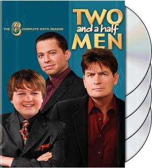

Two And Half Men
Chiropractor and single father Alan Harper lives in a beachfront house with divorced Internet billionaire Walden Schmidt, who bought the house following the untimely death of Alan's brother, Charlie. As they acclimate to their living arrangement, the tightly wound Alan finds himself taking on a mentor role with Walden, whose lifelong dependence on being taken care of has left him a bit naive. Despite his unsuccessful romantic history, Alan also tries to help Walden overcome his limited experiences with dating. Berta, a sharp-tongued, unapologetic housekeeper, is also featured in the series
How I Mate Your Mother

Ted has fallen in love. It all started when his best friend, Marshall, drops the bombshell that he plans to propose to longtime girlfriend Lily, a kindergarten teacher. Suddenly, Ted realizes that he had better get a move on if he hopes to find true love. Helping him in the quest is Barney, a friend with endless -- often outrageous -- opinions, a penchant for suits and a foolproof way to meet women. When Ted meets Robin, he is sure it's love at first sight, but the affair fizzles into friendship. Voice-over by Bob Saget ("Full House") tells the story through flashbacks..
The Neighborhood
When Dave Johnson and his family arrive from Michigan, they're unfazed that their new dream home is located in a community quite different from their previous small town. However, their opinionated next-door neighbor Calvin Butler is wary of the newcomers, certain that they'll disrupt the culture on the block. Dave realizes that fitting in with the new community is more complex than he had expected, but if he can find a way to connect with Calvin, there's an excellent chance of making the new neighborhood a great place to live..